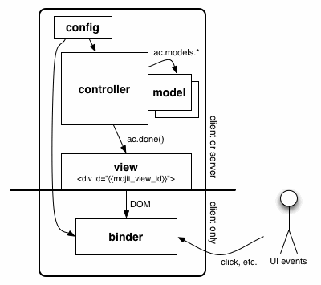

Mojito allows developers to use a combination of configuration and an MVC architecture to create applications. Because client and server components are both written in JavaScript, Mojito can run on the client (browser) or the server (Node.js). The figure below shows the MVC architecture of Mojito and what components can run on the client/server or just the client.
Mojito applications contains JSON configuration files and directories for storing JavaScript, HTML, and CSS. The configuration files can be used to define relationships between code components, assets, routing paths, defaults and are available at the application and mojit-level. The directory structure of a Mojito application reflects the MVC architecture and separates resources, such assets, libraries, middleware, etc.
To create a Mojito application, you use the command-line tool mojito. When the command below is run, Mojito creates a directory structure with files for configuration and other directories for CSS and mojits.
$ mojito create app <mojito_app>
Mojito applications can have one or more mojits. Mojits are the basic unit of composition and reuse in a Mojito application. They consist of Javascript and markup, and follow the MVC pattern. You can think of mojits as the engines that create the rectangular areas of a page.
To create a mojit, you run the command below from the application directory, which creates another directory structure and files that include the mojit controller, model, binders, and views.
$ mojito create mojit <mojito_app>
Each Mojito application contains configuration files and directories for mojits and assets.
The principal files and directories of a Mojito application are listed below are globally available to all mojits. Those marked with an asterisk are not created by default.
Mojits are the basic unit of composition and reuse in a Mojito application. Visually, you can think of a mojit as the rectangular area of a page that was constructed by a Mojito application. Mojits follow the MVC pattern and have their own discrete set of configuration, markup, and JavaScript files. The following section will take a look at the files and directories that generated when you create a mojit.
When you create a mojit, a directory structure containing template files is auto-generated. The template files are for the model, views, controller, tests, and configuration.
The principal directories and template files are listed below with a short description. Those marked with an asterisk are not created by default. The allowed values for {affinity} are client, common, and server. The affinity specifies where the resource is available.
actions - directory of JavaScript files containing methods to add to the controller. Actions are useful for maintaining large controllers.
assets - directory for storing CSS or JavaScript files.
autoload - directory containing JavaScript files that contain YUI modules added with YUI.add. These files aren’t actually autoloaded, but are merely automatically included if required by a YUI module. Both the application directory and mojit directory can have autoload directories.
binders - directory containing event binding files for the mojit.
controller.server.js - the mojit controller that runs on the server. You can also create the file controller.client.js to have a mojit controller that runs on the client or the file controller.common.js that can run on the client or server.
models - directory containing the model scripts.
- model.server.js - default model that runs on the server. You can also create the file model.client.js that runs on the client or model.common.js that can run on either the client or server. Models can be given names as well, such as {model_name}.server.js.
tests - directory containing the controller, model, and YUI module unit tests. The structure of tests mirrors its parent mojit’s directory structure.
- controller.{affinity}-tests.js - the unit tests for the mojit controllers.
- {model_name}.{affinity}-tests.js - the unit tests for the mojit models.
- {module_name}.{affinity}-tests.js - the unit tests for YUI modules, which are located in mojits/{mojit_name}/autoload directory.
- Example of module and corresponding test:
- {app_name}/mojits/{mojit_name}/autoload/{module_name}.{affinity}.js
{app_name}/mojits/{mojit_name}/tests/autoload/{module_name}.{affinity}-tests.js
views - directory containing the view templates.
- index.mu.html - the default view template for the mojit. You can create other view templates that get content from functions in the mojit controllers.
The following shows the directory structure of a Mojito application that has one mojit. The allowed values for {affinity} are client, common, and server. The affinity specifies where the resource is available. The {view_engine} is the engine that renders tags used in a templating system. For example, the value mu in index.mu.html instructs Mojito to use the Mustache rendering engine.
[mojito_app]/
|-- application.json
|-- assets/
| `-- favicon.icon
|-- autoload/
| `-- *.{affinity}.js
|-- index.js
|-- mojits/
| `-- [mojit_name]
| |-- actions/
| | `-- *.{affinity}.js
| |-- assets/
| |-- autoload/
| | `-- *.{affinity}.js
| |-- binders/
| | `-- {view_name}.js
| |-- controller.{affinity}.js
| |-- defaults.json
| |-- definition.json
| |-- lang/
| | `-- {mojit_name}_{lang}.js
| |-- models/
| | `-- {model_name}.{affinity}.js
| |-- tests/
| | |-- autoload/
| | | `-- {module_name}.{affinity}-tests.js
| | |-- binders/
| | | `-- {view_name}.client-tests.js
| | |-- controller.{affinity}-tests.js
| | `-- models/
| | `-- {model_name}.{affinity}-tests.js
| `-- views/
| `-- {view_name}.{view_engine}.html
-- {view_name}.{device}.{view_engine}.html
|-- package.json
|-- routes.json
|-- server.js